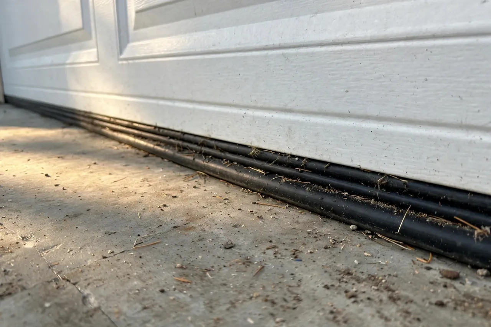
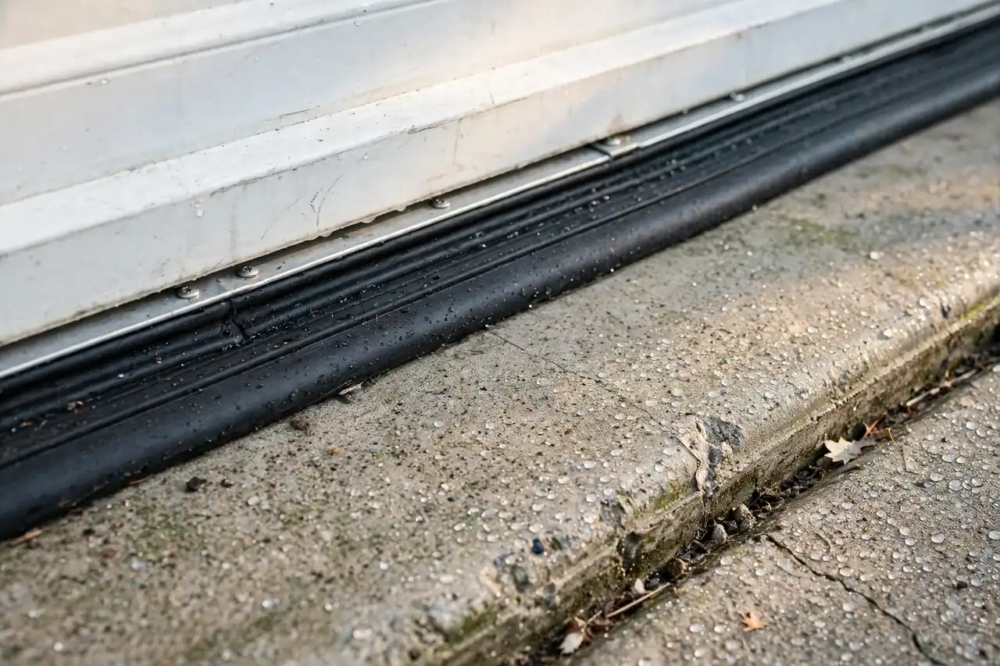
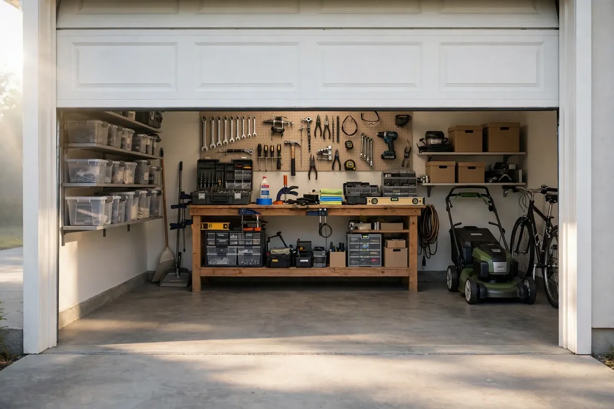

Garage Door Spring Replacement
Garage Door Spring Replacement in Zion, IL
Springs do the lifting. When one breaks, the door turns heavy, may open only a few inches, or may not open at all, and running the opener against a broken spring can strain the opener. This page covers torsion and extension springs on one page, the signs of a broken spring, the paired-replacement question, and why spring work is not a do-it-yourself job. Milwaukee Garage Doors Inc is open 24 hours, every day, at (224) 842-7761.
Service overview
Garage Door Spring Replacement in Zion, IL: Signs of a Broken Spring
A broken spring usually announces itself. Guides describe a loud bang like a firecracker, a door that will not lift or feels extremely heavy by hand, a door that opens a few inches and then stops, or a visible gap in the coil of a torsion spring. If the door slams shut, falls fast, or will not stay open, the counterbalance is suspect too. The safe first step in every case is the same: stop forcing the door and stop running the opener, and call (224) 842-7761.
Springs are wear items. Published guide lifespans run roughly 7 to 15 years for torsion springs and 4 to 12 years for extension springs, depending on the guide and on how often the door cycles, so a spring in an older Zion home may be near the end of its life even if nothing has broken yet. This page covers both spring types together, because most people do not know which type their door has until it is identified, and it links onward where a second system is involved, such as the cables covered on the garage door off-track, cable and roller repair page and the opener strain described on the garage door opener repair and installation page. In older-stock areas such as Central Zion and South Central Zion, where the housing is oldest, springs of unknown age are worth asking about during a garage door maintenance visit.

Torsion springs
Torsion Springs: Above the Door, Under Twist
Torsion springs sit on a shaft above the door opening. They work by twisting as the door closes and untwisting to help lift it. Guides describe torsion springs as the most common type on modern doors.
Where to look
A torsion spring is the coiled spring mounted horizontally above the closed door, on a shaft with cable drums at each end. If the door has two springs on that shaft, they share the lifting work. Identification is visual: the coil, the shaft, and the drums are the giveaway.
Signs of a broken torsion spring
A loud bang, a visible gap in the coil, a door that will not lift or feels extremely heavy, and a door that opens a few inches and stops are the signs guides list. A gap in the coil is the clearest visual sign: the spring has separated where it broke.
Torsion springs and door weight
A torsion spring is matched to the weight and size of the door it lifts. That matching is why a spring cannot be chosen by appearance alone, and why the door's balance is checked after replacement: a door that drifts down or will not stay open is telling you the counterbalance is off.
Torsion springs and the opener
When a torsion spring breaks, the opener takes the full weight of the door. Guides warn against running the opener in that state: the motor and gears strain, and the opener can be damaged. If the door feels heavy by hand with the opener disconnected, the spring is the first suspect, not the opener. See garage door opener repair and installation in Zion, IL for opener strain and diagnosis.
What a Visit Typically Involves, in General Terms
How a Spring Replacement Visit Works, Step by Step
Five steps, in order. Springs store serious energy, so every step treats them as technician work, from identification to the final balance check. That sequence is general-guide language: the exact sequence for any visit is not asserted here as this business's sequence, and the contents of a visit are established on the call.
STEP 01
Identify the spring type
The door is looked at to identify whether it has torsion springs above the opening or extension springs along the horizontal tracks, how many springs it has, and whether the door is balanced. Most people do not know which type they have, and the type decides the parts and the method.
Extension springs
Extension Springs: Along the Tracks, Under Stretch
Where to Look for Extension Springs
Extension springs run along the horizontal tracks on either side of the door, stretching as the door closes and contracting to help lift it. They are the springs you see beside the tracks, not above the opening. If your door has them, there is usually one on each side.
Older installations
Guides describe extension springs as common on older installations, and torsion springs as most common on modern doors. No Zion-specific mix data exists, so no claim is made about which type predominates in Zion homes. The type is identified by looking, not by assuming from the house's age.
How extension springs fail
Like torsion springs, extension springs wear with cycles and can break with a loud bang, leave the door heavy or uneven, or leave a spring visibly stretched or dangling. A door that hangs unevenly after a spring failure may also have a cable problem: the two systems work together, and the garage door off-track, cable and roller repair page covers the cable side.
Extension springs and balance
Both sides must pull evenly, or the door travels crooked and binds in its tracks. Balance is checked by hand with the opener disconnected: a balanced door stays where it is put halfway up. Uneven movement after a spring failure is a reason to stop using the door, not to keep running it.
Extension springs and the opener
A broken or weakened extension spring leaves the opener carrying weight it was not set up to carry. Humming, straining, or giving up partway through a cycle can be the opener's response to a spring problem rather than an opener fault. Diagnosis checks the springs before condemning the opener. See garage door opener repair and installation in Zion, IL.
Which type does my door have?
Look above the opening and along the tracks. A coil on a shaft above the door is a torsion spring. Springs running beside the horizontal tracks are extension springs. If you cannot tell, or if a spring looks broken, do not touch the spring hardware: call (224) 842-7761 and describe what you see.
Conversion: extension to torsion
Guides describe converting an extension-spring door to torsion springs as a job involving new torsion hardware, including springs, cable drums, and a torsion shaft, sized to the door's weight. Whether conversion suits a particular door is a technician question, not a default recommendation, and no conversion is assumed on this page.
Springs, cables, and drums together
Springs do not work alone. Lift cables wind on drums as the door moves, and a spring failure can leave a cable loose, off its drum, or under uneven load. Cable work is covered on the garage door off-track, cable and roller repair page, but the spring visit checks cables too, because the two failures travel together.
Cold weather and extension springs
Cold-stiffened springs failing more noticeably on cold mornings is a hypothesis, not a measured fact about Zion: steel contracts in the cold, and an already-worn spring may have less lift to give. No figures are attached to that idea here, and no seasonal demand claim is made. The practical point is the same in any weather: a heavy or stuck door should not be forced.
What an inspection looks for
An inspection looks for wear, rust, stretching, uneven tension, and damage to the parts around the springs, and checks balance and opener strain. Springs are wear items with published guide lifespans, so age and cycle count matter even when nothing has broken yet. Regular checks are a maintenance topic: see garage door maintenance and tune-up in Zion, IL.

The paired-replacement question
Should Both Springs Be Replaced at the Same Time?
The question, stated plainly
When one spring breaks and the door has two, the question is whether to replace the broken one only or both together. This page does not assume an answer. The considerations below are the ones guides and technicians discuss, and the decision belongs to the visit, after both springs have been looked at.
Both springs share the same use
Paired springs have cycled together for the same years and the same number of openings. That shared history is the main argument guides give for considering both: the surviving spring has lived the same life as the broken one. It is a consideration, not a rule, and the surviving spring's visible condition matters more than its age alone.
What the visit checks
The surviving spring is typically checked for wear, rust, stretching, and uneven tension, and the door's balance is typically checked with the opener disconnected. If the surviving spring shows the same wear as the broken one, that weighs toward replacing both. If it looks sound, that weighs the other way. Either way, the check comes before the decision.
The same question for cables
Cables raise the same paired question: they work in pairs, share the same use, and are checked together. Cable replacement is covered on the off-track page, where the paired question is discussed in the same terms: condition first, fixed rules never. See garage door off-track, cable and roller repair in Zion, IL.
Local execution
Cold Weather, Older Doors, and Spring Replacement in Zion
Springs fail in every season, but cold weather is when failures may show most noticeably. That expectation is labeled a hypothesis wherever it appears, because no Zion failure data was measured. The cards below mix that climate context with the area patterns that shape spring age.
The cold-morning hypothesis
Hypothesis, not measured fact: cold-stiffened steel and reduced lift from an already-worn spring may make failures more noticeable on cold mornings. Chicago-area guides describe springs snapping on cold mornings, and the same reasoning is plausible for Zion's climate. No figures, percentages, or busiest-season claims are attached to it here.
What cold does, in general terms
In general terms, guides describe cold-stiffened springs, brittle seals, and opener strain in cold weather, with thickened lubricant and dragging rollers adding resistance the opener must overcome. Those are mechanisms, not measurements: they explain why a worn spring might fail in winter, without claiming that it will.
Central Zion and South Central Zion: oldest springs
The oldest housing stock in the city, with alley-loaded detached garages. Springs in these areas are of unknown age and replacement history, and a spring that has never been replaced in a pre-2000 home would be long past every published guide lifespan. See garage doors in Central Zion, IL and garage doors in South Central Zion, IL.
Kedron Park: detached garages, alley access
Gravel alleys lined with detached garages and carports, in 1950s to 1970s stock, where a failed spring leaves a detached door heavy to lift by hand and the car behind it. See garage doors in Kedron Park, IL.
Beulah Park and Joanna: 1960s stock
Ranch, split-level, and raised-ranch homes from the 1960s, with a mix of attached and detached garages. Springs from that era, where they survive unreplaced, are well beyond published guide lifespans, and replacement history is unevidenced, so condition is checked rather than assumed. See garage doors in Beulah Park, IL and garage doors in Joanna, IL.
West Zion: the 1990s wave
The western subdivisions' original springs, from the 1990s build wave, are now 25 years old or more if never replaced, which is beyond every published guide lifespan. Whether a given spring has been replaced is unknown, so condition and age are checked rather than assumed. See garage doors in West Zion, IL.
Harbor Ridge and Sunset Ridge: 1990s springs
Attached two- and three-car garages built from the mid-1990s onward, with original doors and openers now two to three decades old. Springs of that age are the ones guides would expect to have been replaced already, and the ones most worth checking. See garage doors in Harbor Ridge, IL and garage doors in Sunset Ridge, IL.
Frozen seals and stuck doors
A second winter hypothesis: bottom seals may freeze to the floor after meltwater refreezes overnight, leaving the door stuck shut in the morning. That is a seal problem, not a spring problem, but it presents the same way: a door that will not open. Do not force it, and do not keep running the opener. See garage door maintenance and tune-up in Zion, IL for seal and winter-preparation topics.
Before winter: a check, not a claim
Pre-winter checks appear in northern Illinois guides as a sensible seasonal step, not a proven demand pattern. A check before cold weather covers springs, cables, rollers, seals, lubrication, and safety tests, and it catches wear while the weather is still mild. No seasonal demand claim is made here. See the garage door maintenance and tune-up in Zion, IL page for what a check includes.
Symptoms, in plain words
Spring Safety: Why Spring Replacement Is Not a Do-It-Yourself Job
Customers describe symptoms, not systems. The cards below use the words people actually use, and each one ends with the same safety point: springs under tension are technician work, not a do-it-yourself job, and no instructions for spring work appear on this page.
Loud bang, then the door will not open
The classic broken-spring presentation. Guides describe the bang as like a firecracker, and the door afterwards as too heavy to lift. Stop using the door, stop running the opener, and call (224) 842-7761. Do not try to lift a door whose spring has broken by forcing it.
Door opens a few inches, then stops or reverses
An ambiguous symptom shared by spring failure and opener or sensor problems. If the door feels heavy by hand with the opener disconnected, the spring is the first suspect. If it moves freely, the opener page's sensor and force sections are the next stop. See garage door opener repair and installation in Zion, IL.
Door feels extremely heavy, slams, or will not stay open
All three are balance symptoms: the counterbalance is no longer doing its job. A door that slams shut or falls fast is a safety concern, and a door that drifts down on its own needs the same attention. Stop using it until the springs have been checked.
Rusty, stretched, or visibly damaged springs
Rust, stretching, a visible gap in a torsion coil, or a spring hanging loose are visual signs that replacement is due, even if the door still moves. A door that still moves on a damaged spring is not a door to keep using: the next failure may be the bang described above. Cables showing the same wear are covered on the garage door off-track, cable and roller repair page.


Practical Guidance for Homeowners.
Clear planningReady for Zion HomesCareful workLocal Company
Codes and safety
Codes and Safety in Zion
Spring replacement in Zion sits under city-adopted building codes, and the opener safety rules matter whenever the opener is reconnected. The five points below state what was confirmed on primary sources and what was not, and they are the only code, permit, and licence statements this page makes. Zion has adopted the 2021 International Building Code and 2021 International Residential Code, effective January 1, 2025, with local amendments. Illinois does not issue a statewide licence covering garage-door work; the only general building-trade contractor licences issued statewide are for roofing and plumbing. Whether City of Zion contractor registration applies to garage-door contractors was not confirmed — ask the City of Zion Building Department. Federal rules (16 CFR Part 1211, UL 325) require residential automatic garage door operators to have entrapment protection: an inherent reversal system plus a secondary entrapment protection device (such as photoelectric sensors or an edge sensor) or a constant-contact control. Test sensors and auto-reverse regularly. No Illinois battery-backup mandate for garage door openers was found. Whether a City of Zion permit is required for garage-door work, and any fee, was not confirmed on a City source. Contact the City of Zion Building Department, 2828 Sheridan Road, (847) 746-4018, before work begins.

Where we work
One local team. A lot of ground covered.
Central ZionSouth Central ZionBeulah ParkJoannaHermonKedron ParkWest ZionHarbor RidgeShepherds CrossingLorelei AcresStonebridge CrossingSunset RidgeCypress ParkCountrywood HillsBrighton PondsButterfield PlaceWestside HillsHighland MeadowsSheridan HillsSheridan LakeSheridan Lake ViewBartletts North Shore Acres
View all Zion areas Notes from local customers
What Zion Customers Say
The crew was proficient and competent, and they made my garage seem better than before.
Premium components were used to rebuild my garage door for reasonably low running cost.
I had a thorough safety check on my garage door, the technician was very detailed.
The signs guides list are a loud bang like a firecracker, a door that will not lift or feels extremely heavy by hand, a door that opens a few inches and then stops, a visible gap in the coil of a torsion spring, and a door that slams shut or will not stay open. Any one of those is reason to stop using the door, stop running the opener, and call (224) 842-7761.
A torsion spring sits on a shaft above the door opening and works by twisting. An extension spring runs along the horizontal track on each side of the door and works by stretching. Guides describe torsion springs as most common on modern doors and extension springs as common on older installations. Which type a door has is identified by looking, not by assuming from the house's age.
This page does not assume an answer. Both springs have seen the same use, which is the main consideration for replacing both, but the surviving spring's visible condition matters more than its age alone. The surviving spring is typically checked for wear, rust, stretching, and uneven tension during a visit, and the decision follows that check. Ask about both springs when you call.
No. A door with a broken spring is heavy, unbalanced, and liable to fall or jam, and running the opener against it strains the motor and gears and can damage the opener. Do not force the door and do not keep running the opener. Leave the door where it is and call (224) 842-7761.
Spring work is technician work, and this page gives no instructions for it. Springs store serious energy under tension, and the tools and methods for winding and releasing that tension are not household tools. Guides are consistent on the safety framing: springs and cables under tension are not do-it-yourself jobs. Call (224) 842-7761 rather than attempting a spring replacement.
Springs are wear items: they break after years of cycles, and published guide lifespans run roughly 7 to 15 years for torsion springs and 4 to 12 years for extension springs. Cold weather is a hypothesis, not a measured fact: cold-stiffened steel and reduced lift from an already-worn spring may make failures more noticeable on cold mornings. No figures or seasonal claims are attached to that idea on this page.
Keep exploring
Related Services
Open 24 hours, every day
Need Help With a Broken Spring in Zion?
Call (224) 842-7761 to reach Milwaukee Garage Doors Inc. Describe what the spring did: the sound, the gap in the coil, or the weight of the door. Do not force the door in the meantime. We are open 24 hours, every day.
Start with the basics
Call Milwaukee Garage Doors Inc
Reach Milwaukee Garage Doors Inc at (224) 842-7761 for garage door spring replacement in Zion, IL. We are open 24 hours, every day, and the phone is the way to reach us. Tell us what the spring did, and do not force the door in the meantime.